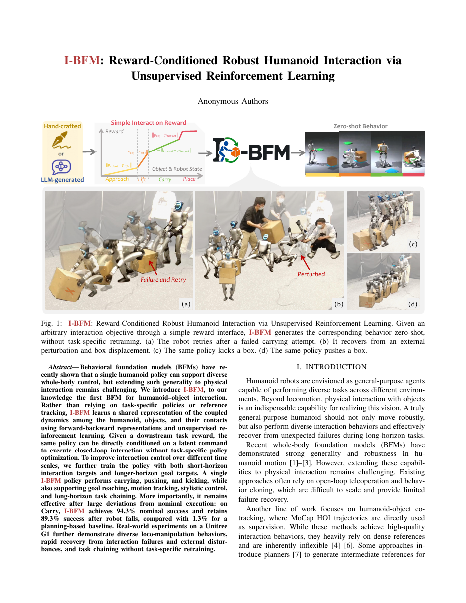

Reward-conditioned · contact-rich · closed-loop
I-BFM
Reward-Conditioned Robust Humanoid Interaction
Anonymous submission · Unitree G1
SCROLL TO EXPLORE ↓
System overview
Video
Sound off
I-BFM / OVERVIEW
Live MuJoCo Sessions
Run the original 166.560M actor in browser-side MuJoCo. Each task loads its own frozen z2z latent controller; the 129.1 MB actor is shared by the browser cache.
01 · CARRY BOX
Approach, lift, transport, and place.
94.3% nominal carry success
ORIGINAL FP32 ACTOR · FROZEN CARRY LATENTS
Start Carry Box
Move the target, disturb the box, or push the robot while the closed-loop carry controller runs.
Load carry session →
02 · PUSH BOX
Reposition, acquire, and push to goal.
85.33% box XY disturbance · 84.67% robot disturbance
FORMAL PUSH CONFIG · FROZEN DEPLOYMENT LATENTS
Start Push Box
Uses the formal push phase graph and the 0.20 m / 100-step success condition.
Load push session →
03 · KICK BOX
Direct drive, recovery, and goal hold.
79.67% box XY disturbance · 86.67% robot disturbance
FORMAL KICK CONFIG · FROZEN DEPLOYMENT LATENTS
Start Kick Box
Uses direct kick drive with the formal recovery route and the 0.20 m / 100-step success condition.
Load kick session →
03 / RESULTS
Robustness thatsurvives contact.
The same learned policy handles nominal interaction, perturbation, and recovery.
Reported carry results come directly from the manuscript.
94.3% Nominal carry success
89.3% Carry success after robot falls
1.3% Planning baseline after falls
LOW GOAL Approach → carry → place
MID GOAL Reward-conditioned placement
HIGH GOAL Long-horizon transport

Learn one interaction foundation model
Reward in.